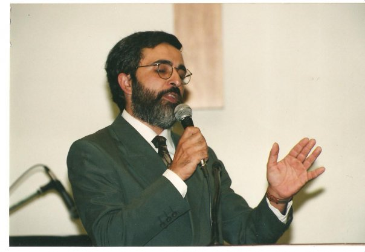

Dr. Eduardo Tatángelo
Educador, Pastor, escritor y conferencista argentino, nacido en Escobar, Provincia de Buenos Aires en 1964. Creció en una familia de pequeños productores agrarios y completó sus estudios primarios en una humilde escuela rural de la zona.
Mientras cursaba sus estudios secundarios en su ciudad natal, tuvo una profunda experiencia de fe que lo llevó a abrazar la fe evangélica.
En 1984 inicia sus estudios teológicos en el Instituto Bíblico Buenos Aires (IBBA). En 1987 contrae matrimonio con Cecilia Irene Acuña (“Lissi”), con quien compartió ese tiempo formativo en el IBBA.
En 1989, nace su primera hija (Cecilia) y en 1991 el hijo varón de la familia (Andrés). Durante dieciséis años vivieron en la zona rural de Escobar, tiempo en que siguió trabajando en la granja familiar. Mientras tanto, comenzaron a desarrollar una intensa actividad de servicio en la iglesia bautista local.
. En 1995, comienza su primer período como pastor de la Iglesia Bautista “Vida Nueva” de Belén de Escobar que durará tres años. En 1996, se graduó como Licenciado en Teología e inició sus estudios en la carrera de Historia en la Universidad Nacional de Luján. Ese mismo año comienza a enseñar Antiguo Testamento en el IBBA, tarea que desarrollará por casi veinte años. En el año 2000, se suma al cuerpo de profesores del Complejo Evangélico Pilar como docente del Nivel Secundario, institución en la que trabajará por más de una década. En 2004 se gradúa como Profesor de Historia y, paralelamente, es designado Decano Académico del IBBA, donde continuó como profesor en diversas materias.
Ese mismo año inicia sus estudios en Educación en la Universidad de San Andrés, institución en la que se graduará como Magister en Educación (2009) y Especialista en Gestión Educativa (2007). Las tesis de Maestría y el posterior doctorado lo llevan a especializarse en la educación evangélica en Argentina, produciendo dos trabajos de investigación inéditos en el campo.
En 2011 se incorpora como director del Nivel Secundario al equipo del Colegio Evangélico Emanuel en Campana, cargo que desempeña hasta hoy. En ese mismo año inicia junto con el pastor Claudio Keller el segundo período como pastor de la Iglesia “Vida Nueva”.
En este período comienza a enseñar y dar conferencias en diversas instituciones de Argentina y del exterior, produciendo desde entonces variados artículos y libros en el campo de la Biblia, la espiritualidad y la educación. Actualmente vive en Escobar dedicado a la tarea pastoral, la escritura y enfocado en el desarrollo de proyectos de intervención educativa.
Sus escritos:
Tesis de Licenciatura: “Hans Denck: Una teología para una autenticidad radical” IBBA, 1996.
Tesis de Maestría: “El campo de las escuelas evangélicas en Argentina: Historia, desarrollo y debates contemporáneos” Universidad de San Andrés, 2009.
Tesis Doctorado: “Junto a cada templo una escuela: procesos de producción y recontextualización del discurso pedagógico en colegios de confesión evangélica en Argentina” Facultad Latinoamericana de Ciencias Sociales (FLACSO), 2018.
Sus libros:
Introducción al Antiguo Testamento, Texto Programado. Tomo I y II IBBA, 2000. “Cuando no se puede parar de sufrir. Una lectura inspiradora del libro de Job”, Editorial Alianza, Buenos Aires, 2014. “Quién dijo que la vida (NO) tiene sentido” Un estudio de Eclesiastés, Editorial Alianza, 2017. Comentario al Libro de Job. Nuevo Comentario Contemporáneo Editorial Kairós, 2017. “Para comprender la Reforma Protestante”, Editorial Puma, Lima, Perú, 2017.